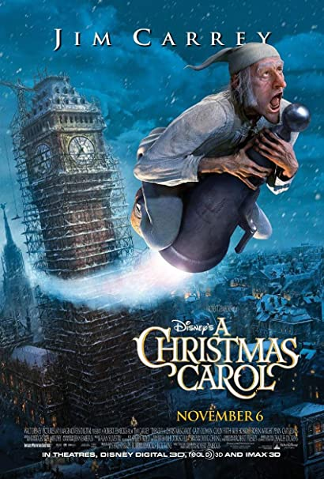
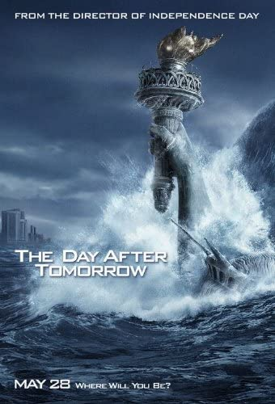

In 2008 the legendary duo John C. Reilly and Will Ferrell act as 40 year old step-brothers who live with their parents and hate each other. However, through their shared hatred of their older brother, they become best friends and must learn to become adults.In 2008 the legendary duo John C. Reilly and Will
Ferrell act as 40 year old step-brothers who live with their
parents and hate each other. However, through their shared hatred
of their older brother, they become best friends and must learn to
become adults.Watch Trailer
The Invisible Man
A 2020 thriller about a woman who is being pursued by a man who found a way to become invisible. This movie is sure to give you chills as you watch her fight to overcome the invisible perpetrator.A 2020 thriller about a woman who is being pursued by a
man who found a way to become invisible. This movie is sure to
give you chills as you watch her fight to overcome the invisible
perpetrator.Watch Trailer
Polar Express
The Polar Express, released in 2004, is based on the book by Chris Van Allsburg where a young boy, along with other children, embark on a journey on a train to the North Pole to see how Santa Claus prepares for Christmas.The Polar Express, released in 2004, is based on the book
by Chris Van Allsburg where a young boy, along with other children,
embark on a journey on a train to the North Pole to see how Santa
Claus prepares for Christmas.Watch Trailer

A Christmas Carol
Ebenezer Scrooge is visited by the three ghosts of Christmas. Through his interactions with the spirits, they show him his past, present and future, all bleak, due to his cruel nature. Ebenezer must learn the value of Christmas and change his ways, else he fulfills the visions he saw, and leads to his own demise.Ebenezer Scrooge is visited by the three ghosts of
Christmas. Through his interactions with the spirits,
they show him his past, present and future, all bleak, due to his
cruel nature. Ebenezer must learn the value of Christmas and change
his ways, else he fulfills the visions he saw, and leads to his own
demise.Watch Trailer

The Day After Tomorrow
The Day After Tomorrow,released in 2004 features a paleoclimatologist who must make a daring trip from Washington, D.C. to New York City to reach his son, trapped in the cross-hairs of a sudden international storm which plunges the planet into a new Ice Age.The Day After Tomorrow,released in 2004 features a
paleoclimatologist who must make a daring trip from Washington,
D.C. to New York City to reach his son, trapped in the cross-hairs
of a sudden international storm which plunges the planet into a new
Ice Age.Watch Trailer